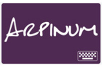
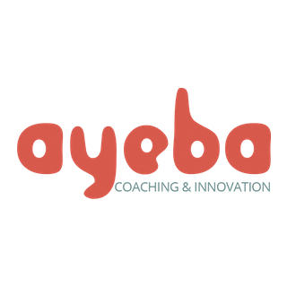

<div class="verticalCentered">
    <div class="row">
        <div id="homepage" class="span12">
			<div class="span12">
					<p class="muted"><h3>Vous avez raté une session filmée ? <a href="http://www.ustream.tv/channel/agile-tour-bordeaux-2013">Retrouvez les vidéos de l'amphi !</a></h3></p>
			</div>
			<div class="span12">
                <hr/>
                <p><h3>Retrouvez les supports des orateurs :</h3>
				<table id="planning" border="1" bordercolor="#CCC" cellspacing="0">
					<tbody>
					<tr class="sw-row">
						<td data-sous-titre="Why change is hard and how to increase your chances of making change happen through coaching" data-orateur="Geoff WATTS" class="conf toutesSalles Shu Ha Ri" colspan="5" data-detail="#Pleniere" style="cursor: pointer;"><a href="http://fr.slideshare.net/geoffwatts/agile-tour-bordeaux-2013-keynote-slides">Keynote d'ouverture</a></td>
					</tr>
					<tr class="sw-row">
						<td data-sous-titre="Des mois d'amélioration continue au sein d'une équipe Agile dans un environnement LEAN" data-orateur="Philippe Launay et Charly Lacoste" class="conf Shu retex" data-detail="#Lectra" style="cursor: pointer;"><a href="http://fr.slideshare.net/philAgile/amlioration-continue-des-faits-des-effets">Amélioration continue, des faits et des effets</a></td>
						<td data-sous-titre="Devenez un Scrum Master d'élite" data-orateur="Gilles Mantel" class="conf debutant Shu" data-detail="#ScrumMasterAcademy"><a href="http://fr.slideshare.net/gmantel/scrum-master-academy">Scrum Master Academy</a></td>
						<td data-sous-titre="Vis ma vie de PO" data-orateur="Camille Schoell &amp; Fabian Szurlej" class="conf Ha po" data-detail="#POrie"><a href="https://www.youtube.com/watch?v=mWyobE1bDrA">De la PO-rie à la pratique</a></td>
						<td rowspan="2" data-sous-titre="Vis ma vie de développeur" data-orateur="Olivier Azeau" class="conf Shu Ha Ri dev" data-detail="#DevLife"><a href="http://www.softwareball.org/resources/fr/presentations/softwareball_2013_oaz.svg">Soft(ware) Ball</a></td>
						<td rowspan="2" data-sous-titre="GTD est une méthode de productivité incroyable mise au point par David Allen." data-orateur="Scott Stephen" class="conf lastcol" data-detail="#GTD">Introduction à GTD</td>
					</tr>
					<tr class="sw-row">
						<td data-sous-titre="Comment choisir !" data-orateur="Alexandre Boutin" class="conf Ha" data-detail="#ScrumKanban"><a href="http://fr.slideshare.net/ATBdx/2013-scrum-ou-kanban">Scrum ou Kanban ?</a></td>
						<td data-sous-titre="...l'aventure au quotidien" data-orateur="Christophe Gagin et Pierre Renaudin" class="conf retex Shu Ha Ri" data-detail="#Azendoo"><a href="http://www.slideshare.net/sa/78689ee000f7cd6386266bccb165c0ff">Building an agile application in an agile way</a></td>
						<td data-sous-titre="" data-orateur="Frédéric Faure" class="conf debutant Shu Ha" data-detail="#ProcessusOutils"><a href="http://fr.slideshare.net/ATBdx/des-processus-et-des-outils-pour-aider-les-individus-et-favoriser-leurs-interactions">Des processus et des outils pour aider les individus et favoriser leurs interactions</a></td>
					</tr>
					<tr class="sw-row">
						<td data-sous-titre="Retour d'expériences de 2 coachs agile" data-orateur="Alexis Monville &amp; Bruno Sbille" class="conf Ha retex" data-detail="#Agilist"><a href="http://fr.slideshare.net/brunosbille/the-agilists-agile-tour-bordeaux">The Agilist</a></td>
						<td data-sous-titre="&quot;mélomanagiliste&quot; (n.m.) Esprit malade qui entend Daft Punk, Stupeflip, The Strokes, John Williams, etc… parler manifestement d’agilité !" data-orateur="Cédric Bodin" class="conf Shu Ha Ri" data-detail="#itu"><a href="http://fr.slideshare.net/cedricbodin/session-agile-tour-bordeaux-2013-au-secours-ma-bibliothque-itu-me-parle-dagilit">Au secours, ma bibliothèque iTu*** me parle d'agilité :)</a></td>
						<td data-sous-titre="LA démo de TDD" data-orateur="Michael Borde" class="conf Shu dev" data-detail="#DemoTDD"><a href="https://github.com/MichaelBorde/Molkky-AgileTourBordeaux2013-Kata-Java">Démonstration TDD</a></td>
						<td data-sous-titre="Comment une organisation humaine peut-elle livrer un produit dans des conditions d'extrême incertitude?" data-orateur="Bastien Gallay" class="conf Shu Ha Ri lastcol" data-detail="#LeanStartup"><a href="http://introduction-a-lean-startup.herokuapp.com/">Introduction à Lean Startup</a></td>
						<td rowspan="2" data-sous-titre="PO, viens t’améliorer par la pratique avec nous !" data-orateur="Emilie Franchomme &amp; Irène Doan" class="conf Shu Ha RI po" data-detail="#podojo"><a href="https://groups.google.com/forum/?hl=en&fromgroups=#!forum/podojo">Atelier podojo (18 personnes)</a></td>
					</tr>
					<tr class="sw-row">
						<td data-sous-titre="" data-orateur="Fabrice Aimetti" class="conf Shu" data-detail="#AgileEnBerne"><a href="https://fr.slideshare.net/faimetti/lagilit-en-berne">L'agilité en Berne</a></td>
						<td data-sous-titre="Value Driven Development" data-orateur="Laurent Carbonnaux" class="conf Shu Ha RI po" data-detail="#GUTS"><a href="http://fr.slideshare.net/LaurentCarbonnaux/agile-with-guts-agile-tour-montpellier-2013-leandesign-value-driven-development">4 étapes pour co-créer le bon produit, parlons Agile with GUTS</a></td>
						<td data-sous-titre="" data-orateur="Guillaume Vincent et Samuel Cranford" class="conf Shu Ha dev" data-detail="#LegacyCode"><a href="https://docs.google.com/presentation/d/1XoBS_sxCCTsknyc5oMemks4nl1lTqXVnXYbhggB40aU/edit#slide=id.g12302a50a_00">Refactoring et Legacy code</a></td>
						<td rowspan="3" data-sous-titre="Craftsmanship vs. the market" data-orateur="Arnaud Bailly" class="conf dev Shu lastcol" data-detail="#XStartup">Extreme Startup</td>
					</tr>
					<tr class="sw-row">
						<td data-sous-titre="" data-orateur="Jean-Baptiste Dusseaut" class="conf dev Ri" data-detail="#MytheAgile"><a href="http://dusseaut.name/le-mythe-du-framework-agile">Le mythe du framework agile</a></td>
						<td data-sous-titre="Trucs &amp; Astuces pour progresser simplement vers l'Agilité" data-orateur="Bertrand et Benjamin Dour" class="conf Shu" data-detail="#PetitPoucet"><a href="http://fr.slideshare.net/Titi1506/le-petit-poucet-les-bottes-de-7-lieues-vers-lagilit">Le Petit Poucet &amp; les bottes de 7 lieues vers l'agilité</a></td>
						<td data-sous-titre="Assurez-vous que vous êtes en train de développer le bon produit avant d'investir massivement dans un mauvais produit" data-orateur="Elalami Lafkih" class="conf Ha Ri" data-detail="#Pretotyping">Le prétotyping</td>
						<td data-sous-titre="" data-orateur="Sébastien Delest" class="conf retex Shu Ha" data-detail="#MaintenanceLogi"><a href="http://fr.slideshare.net/coactiv/lagilit-en-maintenance-logicielle-agile-tour-lille-bordeaux-2013">L'agilité en maintenance logicielle</a></td>                 
					</tr>
					<tr class="sw-row">
						<td colspan="5" data-sous-titre="Plus d'agilité avec le lean" data-orateur="Régis Medina" class="conf Shu Ha Ri toutesSalles" data-detail="#AgileETLean"><a href="http://fr.slideshare.net/InstitutLeanFrance/regis-medina-leanagilerme20131004annotated">Agile et Lean</a></td>
					</tr>
					<tr class="sw-row">
						<td colspan="5" data-sous-titre="Théatre et impro" data-orateur="Emmanuel Gaillot &amp; Jonathan Perret" class="conf toutesSalles" data-detail="#"><a href="https://github.com/ut7/killing-me-softly-with-this-pair">Killing me softly with this pair</a></td>
					</tr>
					</tbody>
				</table>
			</div>
			<div class="span12">
				<hr/>
				<p> <h3>Découvrez les articles de nos sponsors :</h3>
				<h4><a href="articles/Arpinum.html">Arpinum : Pourquoi nous ne faisons plus de “l’AGILE”.</a></h4>
				<h4><a href="articles/Ayeba.html">Ayeba : Pourquoi les mêmes problématiques humaines et organisationnelles ressurgissent ?</a></h4>
				<h4><a href="articles/PublicIdees.html">Public-Idées et l’agilité : une question de culture</a></h4>
				<h4><a href="articles/Yaal.html">Yaal: un contexte propice à l'agilité</a></h4>
				</p>
				<br/>
			</div>
			<div class="row">
                <hr/>
                <div class="span6" id="trailer">
                    <iframe class="steaming" width="540" height="440" src="http://www.youtube.com/embed/SI0PKn4jBMo" frameborder="0" allowfullscreen></iframe>
                </div>
				<div class="span6">
					<span>Le vendredi 8 novembre de 8h30 à 19h30</span>
					<hr />
					<h2>L'Agile Tour Bordeaux<br />plus de 20 conférences pour se former ou se perfectionner, partager et découvrir</h2>
					<p>Tests logiciels, programmation, management, innovation, communication, respect, interactions, XP, Lean, Scrum,<br /> serious game, retour d'expérience, Ux...</p>
                    <!-- <div id="reservationButton">
                        <a href="billetterie.html"><b>Billetterie ouverte!!!</b></a>
                    </div> -->
				</div>
			</div>
            <!-- <div class="row lt-provider">
				<div class="span4">
					<p class="muted">Vous avez l’âme d’un speaker ? <a href="http://lightningtalk.herokuapp.com/">Proposez un lightning talks >></a> </p>
				</div>
            </div> -->
			<!--<div id="countdown" class="span12"></div>-->
			<!--<div id="note" class="span12"></div>-->
        </div>
			<div class="span12">
				<hr />
				<div class="span12 pagination-centered "><p>Nos sponsors</p>
					<span class="gold">Gold : </span><a href="http://www.arpinum.fr/" title="Arpinum"></a>
					<a href="http://ayeba.fr/" title="Ayeba"></a>
					<a href="http://www.dekra-automotivesolutions.com/" title="Dekra"></a><br/>
					<span class="silver">Silver : </span><a href="http://www.neotech-solutions.fr"></a>
					<a href="http://fr.publicidees.com/"></a>
					<a href="http://www.groupe-sii.com/fr" title="SII"></a>
					<a href="http://www.yaal.fr/"></a>
				</div>
			</div>
    </div>
</div>
